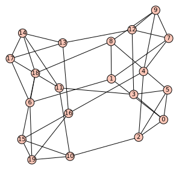

Ramanujan graphs, quaternions, and number theory (Mathcamp 2020)

Ramanujan graphs are graphs that are in a certain sense "well-connected". We will use some ideas from number theory to construct Ramanujan graphs. Amazingly, this construction has a close connection to modular forms.
- Prerequisites
- I will assume you are familiar with linear algebra and some number theory (mainly modular arithmetic). You should also know what a graph is, but I won't assume any graph theory knowledge beyond that.
- Optional software
- I will give some examples of how to generate Ramanujan graphs using Sage. You may find it interesting to try computing some examples yourself. You can install Sage from https://www.sagemath.org, or use it online at https://sagecell.sagemath.org or https://cocalc.com.